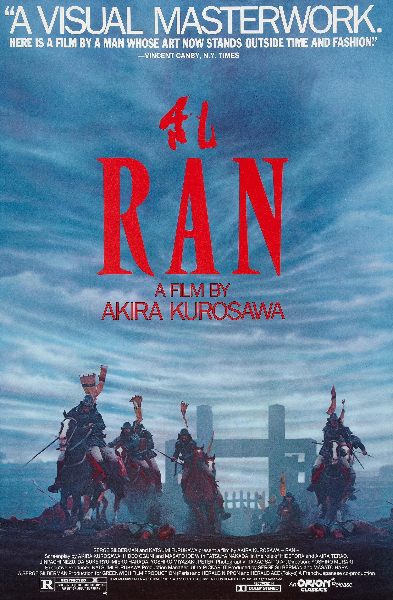

<!DOCTYPE html>
<html lang="no">
<head>
    <meta charset="UTF-8">
    <meta name="viewport" content="width=device-width, initial-scale=1.0">
    <title>film anmeldelse</title>
    <link rel="stylesheet" href="style.css"
</head>
<body>
    
</body>
</html>
<header>
<h1>anmeldelse av Ran</h1>

<li><a href="https://letterboxd.com/film/ran/" target="_blank"> letterboxd-ran</a></li>

<li></li>

<li> sjanger - Drama/historie/krig</li>
<li> utgivelse år - 1985</li>
<li> platform - apple tv, tv-play for leie eller kjøp, den ligger også gratis på <a href="https://archive.org/"> internet-archive</a>
<li> regissør - Akira Kurosawa</li>
<li> aldersgrense - 16</li>



</header>
<main>
<h2>synopsis</h2>
<li> Ran er en gjenfortelling av shakespear's king lear satt i 1600-tallets japan, den handler om en aldrene konge som deler sine landeområder til sine 3 sønner og alt det som skjer etter når grådighet og makt settes over familie. denne filmen handler om grådighet ogsorg, og er rett og slett en episk fortelling med noe av det beste filmografien noen sinne lagd og som noen sinne kommer til å bli lagd.

<h2>hva er bra med filmen?</h2>
<li> - er etter min mening så er dette den filmen med de beste visuellene noensinne.</li>
<li> - vær eneste scene ble malt av regissøren før filming og det er brukt masse sterke og klare farger for å gjøre det enklere for regissøren som holdte på å bli blind å se filmen</li>
<li> - opptredenen til til tatsuya nakadai som lord hitedora (hovedpersonen) er en av mine favoritt film opptredner noen sinne, og han får deg til føle at du virkelig er i filmen</li>
<li> - selv om det er en litt treig film på nesten 3 timer så syntes værtfall jeg at det ikke var et eneste sekund av filmen der jeg kjedet meg</li>
<li> - regiet til Kurosawa er et av de bedre i film, dette syntes også i hans andre filmer som ikiru og seven samurai, og denne regien ga han faktisk en oscar nominasjon for beste regi i 1986 for Ran</li>
<li> - det har episke krigs scener som gjør deg investert i filmen fra relativt tidelig</li>

<h2> - hva er dårlig med filmen</h2>
<li> - det er en veldig treg film, med en spille tid på 2 timer og 42 minutter så bruker den veldig god tid til å bygge opp scener og karakterer, men innen filmen så angrer man ikke ide hele tatt</li>
<li> - det er også en ganske dyster og pessimistisk film, karakterene er drevet av hat og man for på en måte en følesle av håpløshet i menneskeheten når filmen er ferdig</li>
<li> - den er nesten umlig å finne gratis, så når jeg så den så brukte jeg en veldig fin nettside som heter internet archive. det er den jeg bruker for å se basically alt gammelt som man ikke finner på vanlige steder</li>

<p class="terning">terningkast: 6</p>
<style>
.terning {
    font-size: 80px;
    text-align: center;
    color: blue

</style>
<p> jeg ville anbefalt denne filmen på det aller høyeste, men.... jeg ville anbefalt å sjekke ut en av hans andre samurai filmer først som yojimbo (1961), throne of blood (1957) eller hans mest kjente film seven samurai (1954) først siden de har en enklere historie og de er mer action fylte og går mye raskere en ran.</p>
</main>

<footer>
    <p id="copyright">laget av magnus roos 2026</p>
</footer>